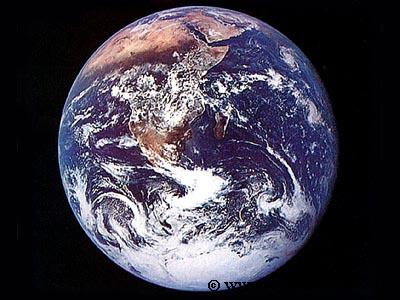

[지구의 하루는 24시간. 일년은 365일이다.]
우주시대가 도래해서 인류가 화성에 정착해 살고 있다고 가정해보자.
화성도 태양 주의를 공전하며 스스로 자전하는 행성이므로 해가 뜨고 진다.
하지만 화성의 하루는 24시간이 아니다. 화성의 하루는 약 24.62 시간으로 지구보다 37분 정도 더 길다.
37분 차이가 뭔 대수냐 싶겠지만 그렇지 않다.
만약에 지구에서 만든 시계로 화성에서 생활한다면 어떤 문제가 생길까?
아침 7시에 일어나려고 알람을 맞춰두면 그 시간이 매일 37분씩 당겨져서 약 38일 후에는 꼬박 하루가 달라져 버린다.
결국 화성에서는 화성의 하루에 맞춘 시계가 필요하다는 얘기가 된다.
그 뿐만이 아니다.
화성에서의 1년은 자그마치 687일(지구 시간을 기준으로) 가량이나 된다.
이것은 지구보다 두 배 가량 긴 시간이며 화성의 하루를 기준으로 본다고 해도 667일(화성)이나 되는 시간이다.
화성에서 태어나면 생일이 687일만에 찾아온다. 매우 심각한 문제다.
사실 화성의 하루나 일년이 길다는건 화성내에서는 큰 문제가 되지 않을 것이다.
문제는 지구와 잦은 왕래나 소통이 있을때 발생할 것 같다.
이런 차이는 그저 시계에 두 행성의 시간을 동시에 표시하는것으로 해결되지 않는다.
당장 화성력 15년 6월 8일 이라고 한다면 그게 지구에서는 언제쯤이었는지 감도 오지 않을 것이기 때문이다.
뭐..
아무리 복잡해도 좋으니 내가 살아 있을때 우주시대가 왔으면 좋겠다. 쩝.